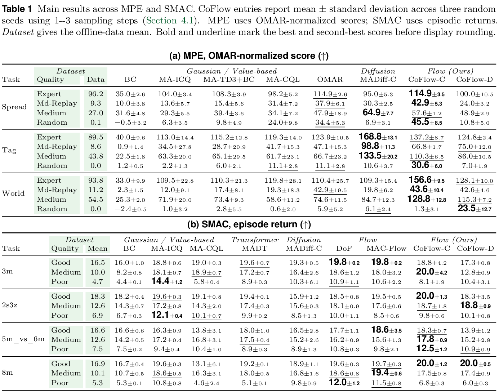

We evaluate centralized and decentralized CoFlow on 48 configurations across MPE and SMAC. CoFlow-C improves over our reproduced MADiff-C baseline by 11.2%, averaging relative gains equally across the two benchmark suites.
The table below is taken directly from the updated paper. MPE reports OMAR-normalized scores; SMAC reports episode return. Click any figure to inspect it at full resolution.

Table 1. Updated MPE and SMAC results. Bold and underline indicate the best and second-best scores in each row.